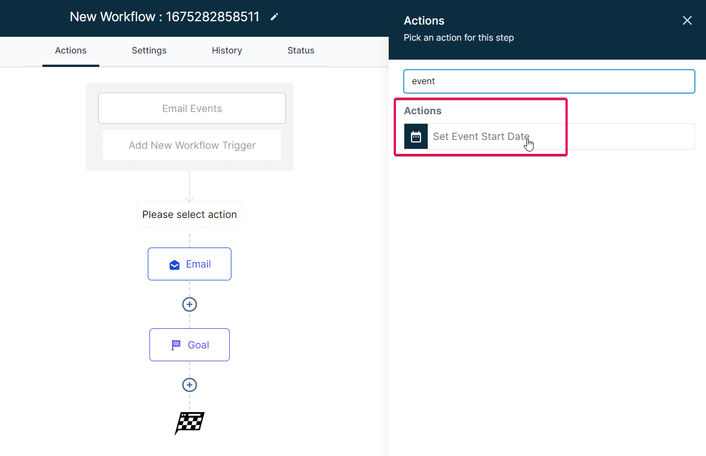
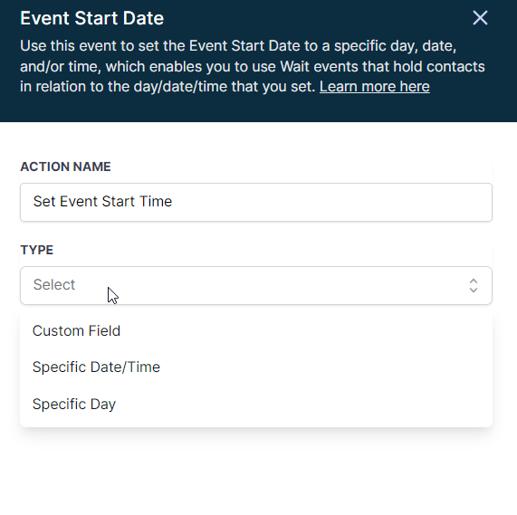
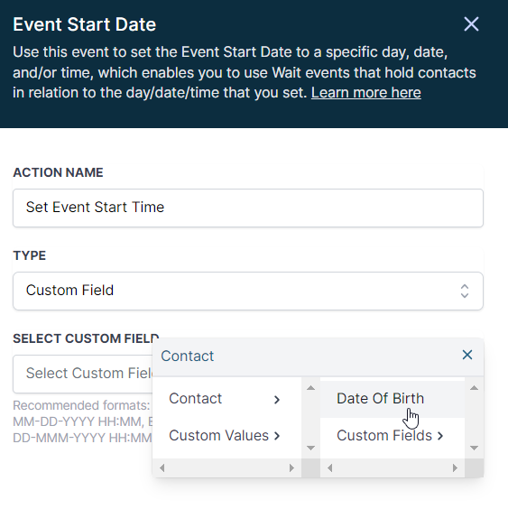
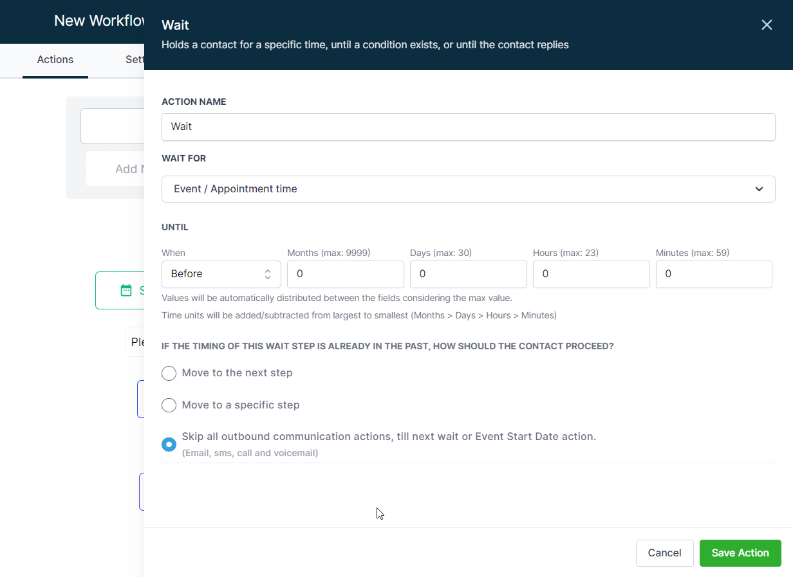

In this guide, we'll explore the "Set Event Start Date" Workflow Action, a dynamic tool that allows you to schedule tasks and reminders within your workflow for precise event management. This feature is crucial for maintaining well-organized webinars, conferences, or personalized notification systems..
Covered in this Article:
What is the Set Event Start Date Step in Workflows?
How to use the Event Start Date Action?
FAQs
Q1: Can I use the "Set Event Start Date/Time" action for recurring events?
Q2: Can I set multiple Event Start Dates/Times in the same workflow?
Q3: What happens if a contact enters the workflow after the Event Start Date/Time has passed?
Q4: Can I use the "Set Event Start Date/Time" action without a corresponding "Wait for Event/Appointment Time" action?
Q5: If my workflow settings are set to respect Contact time zones, how does that affect the "Set Event Start Date/Time" action?
What is the Set Event Start Date Step in Workflows?
The "Set Event Start Date/Time" action is a tool within a workflow management system that allows you to define a specific date and time to serve as the reference point for subsequent steps in your workflow. It's especially useful for scheduling tasks, reminders, or actions that need to occur before or after a particular event.
Once this action is set, you can use the "Wait" steps in your workflow to Wait for Event/Appointment Time to pause the execution until a specified time relative to this event date. For example, you could set up reminders to go out several days before an event or schedule a follow-up action for several days after the event.
This tool offers flexibility and automation, enabling effective time management within your workflow. It's particularly valuable for managing webinars, conferences, meetings, and events.
What are the benefits of this feature?
The "Set Event Start Date/Time" action offers several practical benefits for managing workflows and events:
Automated scheduling: This action allows you to schedule tasks, reminders, or emails to occur at specific times relative to an event automatically. This can greatly reduce manual work and ensure nothing gets overlooked or forgotten.
Timely reminders: If you manage events such as webinars or conferences, this action can automatically send reminders to attendees a certain number of days or hours before the event starts, increasing engagement and attendance rates.
Follow-up actions: You can also use this action to schedule follow-up tasks or communications after an event. For example, you could automatically send out a survey or a thank you email several days after an event.
Flexibility: The "Set Event Start Date/Time" action isn't limited to specific dates. It can be used with any date-related field, so you could set it up to trigger tasks based on individual customer dates, like renewal dates or birthdays.
Recurring Events: It can also handle recurring events. For instance, if you run weekly webinars, you can set up your workflow to automatically send out reminders each week and then reset the event date for the following week.
Time-specific Actions: Some actions need to happen at a specific time, such as a social media post or a sales announcement. This action lets you schedule those actions precisely.
What are some practical usage cases of this Workflow Action?
Webinar Management: If you're organizing a webinar, you can use the "Set Event Start Date/Time" action to specify the webinar date and time. Then, you can add "Wait for Event/Appointment Time" steps to send out reminder emails a week, a day, and an hour before the webinar starts. A follow-up email could be set to go out a day or two after the event to thank participants and share additional resources.
Subscription Renewals: For a service with annual renewals, you can pair this action with a custom date field for each customer's renewal date. Using "Wait for Event/Appointment Time" steps, reminders can go out a month, a week, and a day before each customer's renewal date, nudging them to renew and providing necessary instructions.
Conference Planning: When organizing a conference, set the conference date as the event start date, and use "Wait for Event/Appointment Time" steps to automate communications like early bird registration reminders, ticket purchase reminders, event schedules, or last-minute updates.
Birthday Promotions: For businesses that offer special promotions for customers' birthdays, this action can be paired with a custom field for each customer's birthday. A "Wait for Event/Appointment Time" step can be set up to send a birthday greeting and a special birthday discount.
Product Launches: If you're launching a new product, the launch date can be established as the event start date. You can set up a series of "Wait for Event/Appointment Time" steps to send out teaser emails leading up to the launch, a launch announcement on the day, and follow-up communications after the launch.
Training Sessions: If you're providing training sessions, use the "Set Event Start Date/Time" action to mark the session's start. Then, use the "Wait for Event/Appointment Time" steps to send out session details, reminders a few days before the session, and last-minute reminders an hour before it starts. You can also schedule a follow-up email to share session recordings or materials.
Product Trials: For a product or service with a free trial period, you can set the trial expiration date as the event start date. Using the "Wait for Event/Appointment Time" steps, send reminders to users a week, three days, and one day before their trial expires, encouraging them to purchase the full version.
Sales or Promotions: If your business has a sale or promotion, set the start date/time of the sale as the event date. You can then schedule "Wait for Event/Appointment Time" steps to send out teaser emails, launch the sale, and send last-chance reminders as the sale ends.
Annual Checkups or Maintenance: If your business involves annual checkups or maintenance, like an HVAC business or a dentist's office, you can set each customer's next appointment date as the event start date. Then use the "Wait for Event/Appointment Time" steps to remind customers of their upcoming appointment and follow up afterward.
Project Deadlines: If you're managing a project with a specific deadline, you can use the "Set Event Start Date/Time" action to mark the deadline and then use the "Wait for Event/Appointment Time" steps to send out reminders or tasks to the team in the lead-up to the deadline.
How to use the Event Start Date Action?
Step 1: Add the Event Start Date/Time Action to Your Workflow
Navigate to the specific Workflow you want to modify.
Add the "Set Event Start Date/Time" action and prepare to customize the action.

Step 2: Customize the Event Start Date/Time
You usually have options for the type like Custom Field, Specific Date/Time, or Specific Day. 
For Custom Fields, you can use pre-created Custom Date Field custom values to tell the workflow what event date you want to specify.

Please Note:
The "Set Event Start Date/Time" action often allows you to use a variety of date and time formats. Here are some formats that are commonly accepted:
MM-DD-YYYY HH:MM: This format includes the month (MM), day (DD), and year (YYYY), followed by the time in 24-hour format (HH:MM). For example, December 21st, 2021 at 8:30 AM would be written as 12-21-2021 08:30.
DD-MMM-YYYY HH:MM: This format includes the day (DD), the abbreviated month (MMM), and the year (YYYY), followed by the time in 24-hour format (HH:MM). For example, October 21st, 2021 at 8:30 AM would be written as 21-OCT-2021 08:30.Select the option you wish to use and fill out the necessary information. For example, if you select a specific date and time, you'll need to enter the exact date and time for the event.
Save the action to add it to your Workflow.
Step 3: Add a Wait for Event/Appointment Time Action
After setting the event start date/time, add a "Wait for Event/Appointment Time" action in your Workflow.
Set the action to wait until a certain number of days/hours/minutes before or after the event start date/time.
For example, if you set this to 2 days before, the Workflow will wait and send off the next action 2 days before the scheduled Event Start Date.

Please Note:
The Wait for Event/Appointment Time Action has some further configurations. Event / Appointment Time: This field typically relates to the event or appointment you've set with the "Set Event Start Date/Time" action. The "Wait for" action will hold until the specified time relative to this event or appointment. UNTIL - When: This configuration allows you to set the wait time until the next action occurs. This is based on a period of months, days, hours, and minutes. For example, you could set this to wait until 2 days and 3 hours before the event time. Values that exceed the max limit will be distributed to the larger units of time. For instance, if you input 60 minutes, it will be converted to 1 hour. IF THE TIMING OF THIS WAIT STEP IS ALREADY IN THE PAST, HOW SHOULD THE CONTACT PROCEED?: This configuration determines how the system should handle instances where the wait time is already past due. Options typically include: Move to the next step: The workflow will skip the wait and proceed to the next step in the workflow. Move to a specific step: The workflow will skip the wait and move to a specific step that you designate. Skip all outbound communication actions, till next wait or Event Start Date action: The workflow will skip any actions that involve sending communication (such as emails or SMS) until it encounters the next "Wait for Event/Appointment Time" or "Set Event Start Date/Time" action.
Save the action to confirm your changes.
Remember, these actions are repeatable within the workflow. You can add multiple "Wait for Event/Appointment Time" actions to create events leading to or following the Event Start Date.
FAQs
Q1: Can I use the "Set Event Start Date/Time" action for recurring events?
A1: Yes, it's typically possible to use this action for recurring events. You can set the Event Start Date/Time for the first instance and then use a "Go To" action to loop back to the start of the workflow for subsequent instances.
Q2: Can I set multiple Event Start Dates/Times in the same workflow?
A2: You can typically add multiple "Set Event Start Date/Time" actions within the same workflow. Each one could correspond to a different event or appointment, and you could then use corresponding "Wait for Event/Appointment Time" steps to create actions relative to each start date/time.
Q3: What happens if a contact enters the workflow after the Event Start Date/Time has passed?
A3: The behavior depends on your settings for the "Wait for Event/Appointment Time" action. If you set it to "Move to the next step" or "Move to a specific step", the contact would skip past the wait action. If you set it to "Skip all outbound communication actions, till next wait or Event Start Date action", they would skip outbound communication steps until they encounter the next wait or start date/time action.